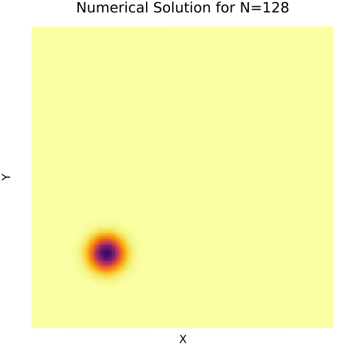

Welcome to My Website

Hi I'm Tommy. I am a PhD student in the Mechanical Engineering Department at UC Berkeley
studying computational science. This is my personal space to showcase my work and experience.
Projects
Here you can find some of my recent work and contributions.
-
1: Numerical Solution to Eulerian Compressible Gas Dynamics.
Read more

-
2: Low Rank Tensor Approximation for Accelerated ESRGAN.
Read more

-
3: Parallel Particle Simulation: OpenMP, MPI, & CUDA.
Read more

Numerical Solution to Eulerian Compressible Gas Dynamics
Detailed description of project 1.

Project 2
Detailed description of project 2.
Project 3
Detailed description of project 3.
Curriculum Vitae
Download PDF Version
Education
Doctor of Philosophy in Mechanical Engineering,
University of California, Berkeley (2023 - Present)
GPA: 3.93
Bachelor of Science in Environmental Engineering Science,
University of California, Berkeley (2019 - 2023)
GPA: 3.64
Experience
Graduate Student Researcher,
Multiphysics Simulation and Optimization Lab, Berkeley, CA (Aug 2023 - Present)
- Conducting research under Dr. Tarek Zohdi in the fields of computational science and design optimization
- Research Topic: Informative Path Planning for Mapping Dynamic Adversarial Populations
- Gaussian Processes and Level Set Estimation to track population modeled by stochastic differential equations
Graduate Student Researcher,
Lawrence Livermore National Laboratory, Livermore, CA (May 2024 - Dec 2024)
- Subcontractor for Center for Applied Scientific Computing
- ARPA-E funded project to develop model order reduction techniques of 1D-1V Vlasov-Poisson solvers for fusion research
- Managed dozens of terabytes of data from generation to reduction via FFT and dynamic mode decomposition
- Explored long-term phenomena in two-stream instabilities and KEEN waves
Graduate Student Instructor,
UC Berkeley Mechanical Engineering Department, Berkeley, CA (Jan 2024 - May 2024)
- Lead Teaching Assistant for graduate level mechanical engineering course of 50 students
- Responsible for design of 7 coding projects and final exam, leading discussion sections, and holding office hours
- Substituted as lecturer on multiple occasions when professor was unable to attend
Mechanical Project Engineer Intern,
TAE Technologies, Foothill Ranch, CA (May 2023 - Aug 2023)
- Assembled multi-component test stand and a data acquisition system for thermomechanical analysis
- Conducted and collected data for 50+ experiments to quantify flow and heat transfer performance
- Post-processed 10000+ data points in Excel and Python to guide further design of experiment
Projects
-
Senior Thesis: Digital Twin and Machine Learning Frameworks for Control of Data Center Energy Management Systems.
Keywords: Genetic Algorithms, Neural Networks, Model Order Reduction, Energy Management Systems
-
Numerical Linear Algebra: Low-Rank Approximation for Convolutional Layers in Super Resolution Applications.
Keywords: Singular Value Decomposition, Canonical Polyadic Decomposition, Convolutional Neural Networks
-
Pedagogy: 16 page educational guide to introduce deep learning for beginning programmers.
Published on the website of AI Institute for Next Generation Food Systems.
Keywords: Deep Learning, Pedagogy
Skills
- Technical Skills: Genetic Algorithms, Computational Physics, Data Visualization
- Languages: C/C++, Python, MATLAB, Julia
- Tools: CUDA, TensorFlow, PyTorch, Keras, scikit-learn, pandas, NumPy, HDF5